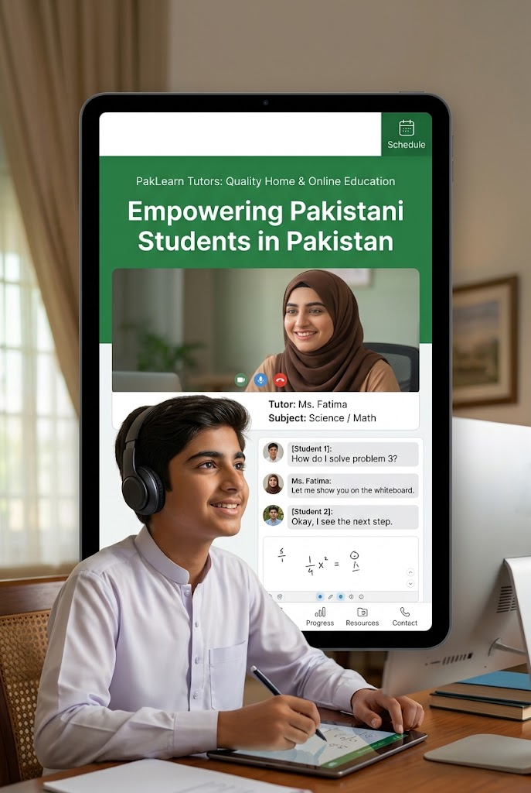

Home Tutors in Bahria Town Lahore – Home Tuition & Online Tutors for O/A Levels, Matric, Science & All Subjects
Bahria Town Lahore is a large residential community. Parents often need tutors who can either travel reliably into the society or teach effectively online when distance and traffic make regular home visits difficult.

Find a Home Tutor in Bahria Town Lahore
Because Bahria Town sits at a distance from many central parts of Lahore, travel time is a real consideration for home tutors. Parents frequently ask whether a tutor can commit to regular visits or whether online tuition would be more sustainable.
Pak Home Tutors helps families request both home tuition and online tuition. We focus on matching according to grade, subjects, board and practical travel or online readiness. We do not claim that a tutor is always available inside every sector of Bahria Town.
Home Tuition vs Online Tuition in Bahria Town
Home Tuition
Possible when a tutor can reasonably travel to the relevant sector. Best for younger students and parents who want in-person sessions.
Online Tuition
Often the more practical long-term option for Bahria Town because it removes daily travel. Online tutors can still deliver structured one-to-one lessons for school, intermediate and Cambridge subjects.
Many families start with one mode and later adjust according to what works best for the student.
Subjects, Grades & Boards
Requests commonly include Mathematics, Physics, Chemistry, Biology, English, Computer Science and related subjects. Coding, Python, AI basics and robotics enquiries are also increasing.
We support Primary to Intermediate levels as well as Cambridge O Level and A Level. Mentioning the board and preferred sector helps us look for a better match.
Cambridge & Science Support
Cambridge and science subjects often require teachers who are comfortable with the current syllabus. When a local specialist cannot travel regularly into Bahria Town, online Cambridge or science tutors become a useful alternative.
Common Problems Parents Face in Bahria Town
- Tutors accepting the area initially but later struggling with travel time
- Difficulty finding specialists for higher Cambridge or science grades
- Scheduling around school transport and family routines
- Need for reliable online options when home visits are hard to sustain
- Preference for female tutors in some households
How Pak Home Tutors Works
- Share the sector (if known), grade, subjects, board and home/online preference.
- We look for tutors who can realistically serve the requirement.
- We update you with available options.
- You choose how to proceed.
Request a Tutor for Bahria Town Lahore
Request a Tutor on WhatsAppFAQs
Can I get a home tutor in Bahria Town Lahore?
Yes, subject to tutor availability and travel practicality. Online tuition is also actively offered as an alternative.
Is online tuition suitable for Bahria Town students?
Yes. Online sessions remove travel constraints while still providing one-to-one teaching.